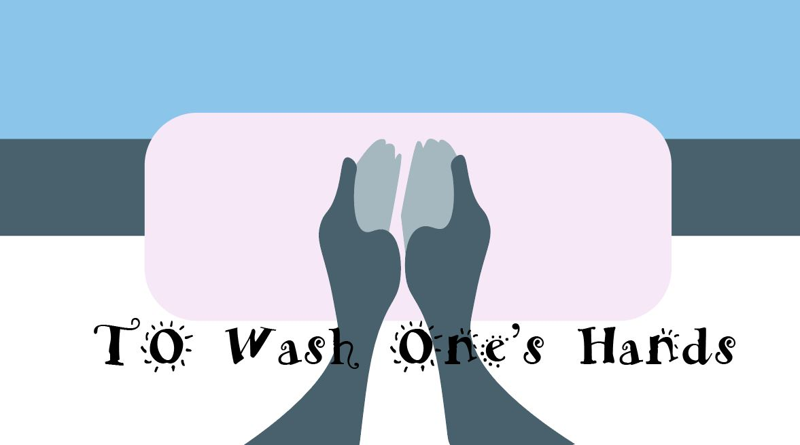

What was the first thing you heard about the Pandemic?
" I heard on the radio that you should wash your hands and not touch your face"
-Jacob Cassell
A poem to say outloud while washing your hands
“THE PEACE OF WILD THINGS”
BY WENDELL BERRY
When despair for the world grows in me
and I wake in the night at the least sound
in fear of what my life and my children’s lives might be,
I go and lie down where the wood drake
rests in his beauty on the water, and the great heron feeds.
I come into the peace of wild things
who do not tax their lives with forethought
of grief. I come into the presence of still water.
And I feel above me the day-blind stars
waiting with their light. For a time
I rest in the grace of the world, and am free.
from The Peace of Wild Things: And Other Poems
“ It screams at jet-engine volume that we are interdependent not only with each other but also with the entire ecology of the earth.” -N. Katherine Hayles
One of the ways to take care of oneself is slow and down, rest, wash one's hands and heal. To share with other's such an experience is also needed as we are children of the Earth.
More poems to wash your hands to!
Want to write a poem as well?